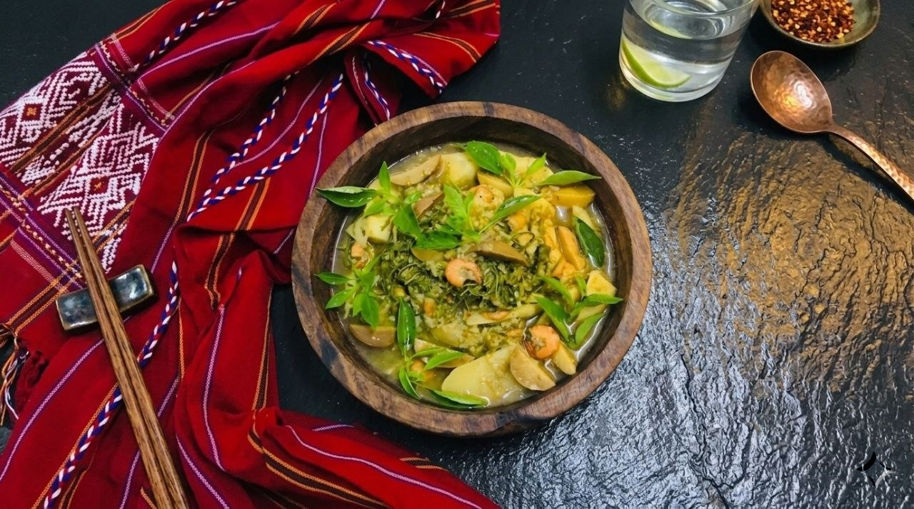

တာလဘောဟင်း
ရေဆူဆူမှာ ငါးခြောက် (သို) အသားကို အရင်ပြုတ်ပြီး ဟင်းသီးဟင်းရွက်မျိုးစုံနဲ့ မျှစ်ကို ထည့်ချက်ပါ။ အရွက်တွေ နူးအိလာပြီဆိုရင် ဆန်မှုန့်ကို ရေဖျော်ပြီး ဟင်းအိုးထဲ လောင်းထည့်ကာ ပစ်ပစ်လေးဖြစ်အောင် မွှေပေးပါ။ ငရုတ်သီးစိမ်းထောင်းနဲ့ ဝါးတီးတိုထည့်ပြီး အစပ်အရသာလေးရအောင် ပြုလုပ်ပါ။
တာလပေါဟင်းဟာ ကရင်လူမျိုးတို တောတောင်ထဲမှာ နေထိုင်စဉ်ကတည်းက စတင်ခဲ့တာပါ။ "တာလပေါ" ဆိုတဲ့ အဓိပ္ပာယ်က "အာဟာရဖြစ်စေပြီး ဗိုက်ဝစေတဲ့ဟင်း" လို ယူဆကြပါတယ်။ ရှေးယခင်က တောင်ယာလုပ်ငန်းခွင်သွားတဲ့အခါ တောထဲကရတဲ့ ဟင်းသီးဟင်းရွက်မျိုးစုံကို အသားအနည်းငယ်နဲ့အတူ ဆန်မှုန့်ထည့်ပြီး ပစ်ပစ်လေးချက်စားရာကနေ ပေါ်ပေါက်လာတာပါ။ ကရင်လူမျိုးတိုရဲ့ ရိုးသားဖြူစင်တဲ့ လူနေမှုဘဝကို ဖော်ပြတဲ့ ဟင်းတစ်ခွက်လည်း ဖြစ်ပါတယ်။
အဓိကအသီးအရွက်: မျှစ် (ဒါက အဓိကပါ)၊ ကန်စွန်းရွက်၊ ဗူးညွန့်၊ မုံလာရွက် စတဲ့ ဟင်းသီးဟင်းရွက်မျိုးစုံ။ အသား: ငါးခြောက် (သို) အသားခြောက် (သို) ပုစွန်ခြောက်။ အနှစ်: ဆန်မှုန့် (ဟင်းရည် ပစ်ပစ်လေးဖြစ်စေဖို)။ အမွှေးအကြိုင်: ငရုတ်သီးစိမ်း၊ ကြက်သွန်ဖြူ၊ ဝါးတီး (ကရင်ငရုတ်ကောင်း)။